El lanzamiento del SoC NVIDIA RTX Spark en Computex 2026 marca un punto de inflexión para el sector TIC y, especialmente, para sectores profesionales como los estudios de arquitectura. Este informe analiza su arquitectura, su impacto en el ecosistema tecnológico y las oportunidades concretas que abre para nuestro estudio en Madrid.
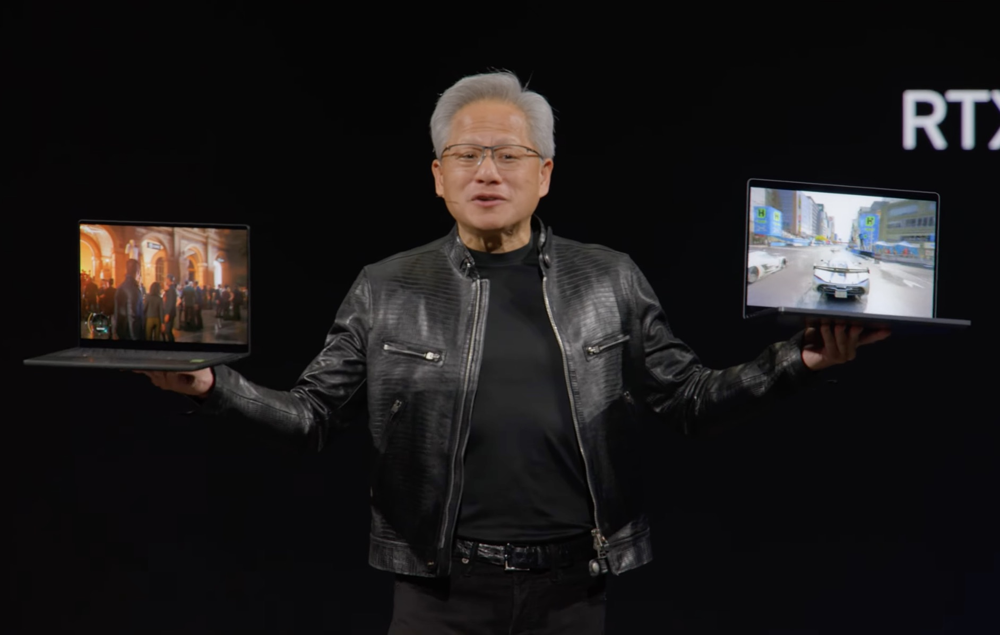
Imagen principal: NVIDIA RTX Spark en Computex 2026 · Fuente: Hipertextual
El 31 de mayo de 2026, Jensen Huang subió al escenario de Computex en Taipéi con un anuncio que redefine los PCs: el NVIDIA RTX Spark, el primer SoC (System-on-Chip) de NVIDIA diseñado para portátiles y mini-PCs con Windows 11.
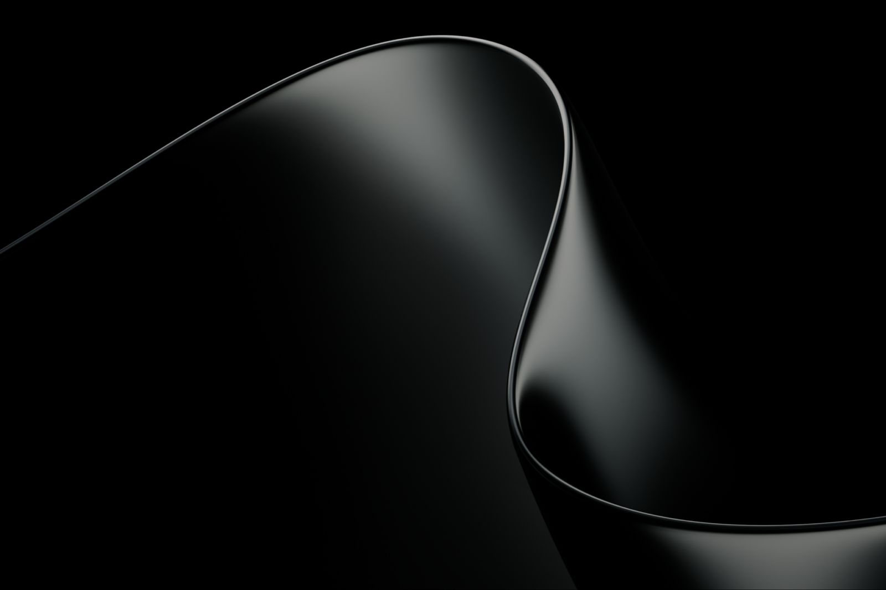
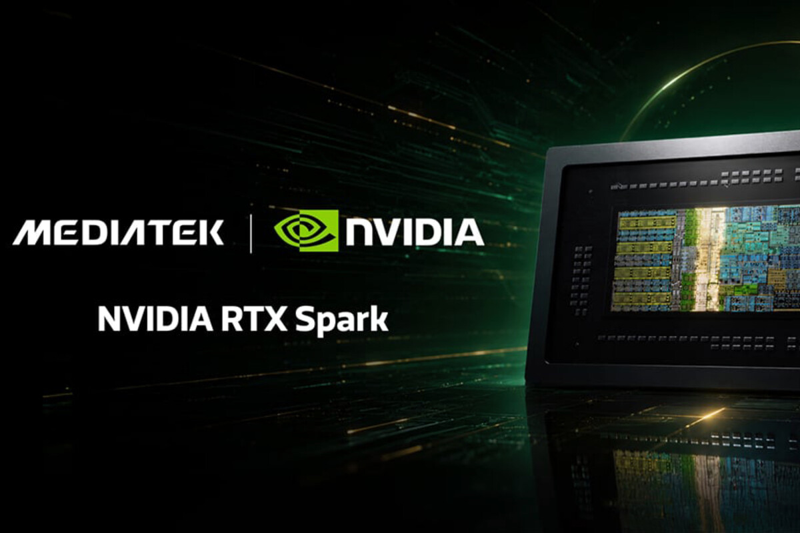
Desde hace más de una década, el paradigma de los ordenadores personales bajo Windows se fundamentaba en un modelo binario: procesadores Intel o AMD de arquitectura x86. La llegada de Apple Silicon con la serie M demostró que la arquitectura ARM podía competir —y superar— en rendimiento por vatio a las soluciones convencionales. Qualcomm intentó replicar esa fórmula en Windows con sus chips Snapdragon X Elite, con resultados mixtos.
El RTX Spark cambia el tablero por completo. Al combinar una CPU Grace de 20 núcleos (co-diseñada con MediaTek sobre ARM) con una GPU Blackwell de 6.144 núcleos CUDA, todo ello conectado mediante NVLink C2C y alimentando hasta 128 GB de memoria unificada LPDDR5X, NVIDIA trae a un portátil el equivalente de una RTX 5070 discreta más una estación de trabajo de IA.
La relevancia de este lanzamiento se amplifica por el respaldo inmediato del ecosistema: Microsoft confirma un Surface Laptop Ultra con RTX Spark; HP, Dell, ASUS, Lenovo y MSI preparan sus propios dispositivos para el otoño de 2026. El mercado de PCs con Windows asiste, por primera vez en décadas, a una ruptura real con el binomio Intel/AMD.
Para un estudio de arquitectura en Madrid, este salto tecnológico tiene implicaciones directas: flujos de trabajo BIM más fluidos, renderizado en tiempo real sin hardware externo, modelos de IA generativa ejecutados localmente sin depender de la nube y una reducción significativa del coste total de propiedad de las estaciones de trabajo.
El PC se está reinventando. Durante cuarenta años, abrías aplicaciones mediante clics. Los agentes de IA son el nuevo interface que permite comandar el sistema con lenguaje natural.
— Jensen Huang, CEO de NVIDIA, keynote Computex 2026Bajo la denominación RTX Spark se esconde un diseño de dos chiplets fabricados en el nodo de 3 nm EUV de TSMC, con una arquitectura que hereda directamente el ADN del superchip GB10 del DGX Spark pero reoptimizado para dispositivos portátiles y de escritorio compacto.
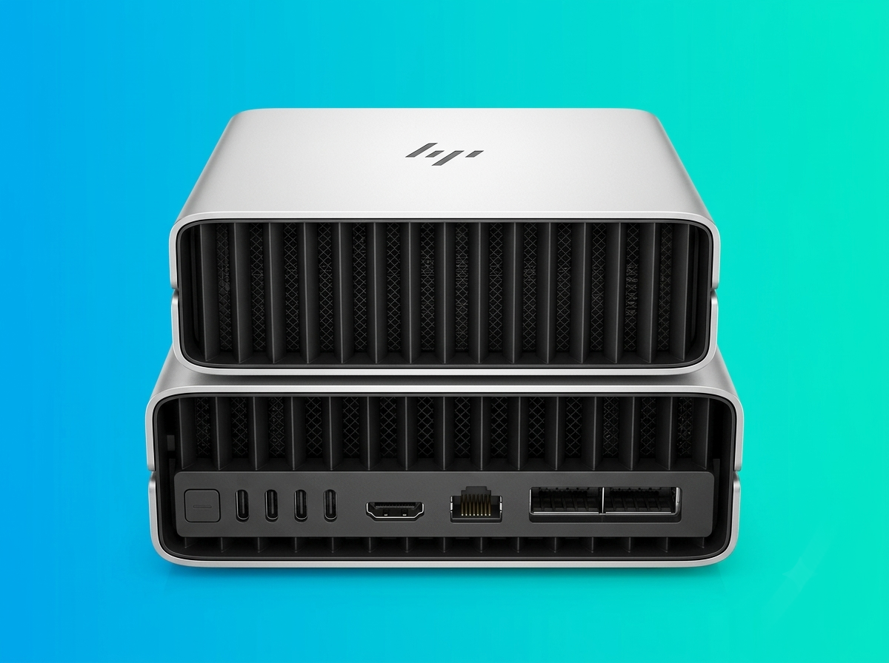
Izquierda: prototipo HP mini-PC con RTX Spark (NotebookCheck) · Derecha: diagrama simplificado Grace + Blackwell · CPU: Profesional Review
| Componente | Especificación | Contexto |
|---|---|---|
| Proceso de fabricación | TSMC N3E (3 nm EUV) | El mismo nodo que los chips Apple M4; máxima eficiencia disponible |
| CPU "Grace" | 20 núcleos ARM (10× Cortex-X925 + 10× Cortex-A725) | Co-diseñado con MediaTek; hasta 4,1 GHz en núcleos de rendimiento |
| GPU "Blackwell RTX" | 6.144 núcleos CUDA · 48 SM · Tensor Cores 5.ª gen. (FP4) | Equivalente a una RTX 5070 (versión laptop) |
| Interconnect CPU↔GPU | NVLink C2C | Acceso coherente a toda la memoria sin penalización de copia |
| Memoria | Hasta 128 GB LPDDR5X unificada · 256-bit · 273–300 GB/s | Misma pool para CPU y GPU; configuraciones desde 16 GB |
| Rendimiento IA | 1 petaFLOP FP4 | Los Copilot+ actuales ofrecen 40–50 TOPS; RTX Spark alcanza ~1.000 TOPS |
| TDP | 10 W – 80 W (configurable por OEM) | Alta eficiencia energética, apto para portátiles finos y mini-PCs |
| Sistema operativo | Windows 11 (ARM64) + CUDA, DLSS, TensorRT, OptiX, G-SYNC | Ecosistema CUDA completo en arquitectura ARM, una novedad histórica |
| Compatibilidad | Apps x86 vía emulación; apps ARM64 nativas | Herramienta Prism de Windows 11 para la capa de emulación x86 |
El RTX Spark no es un producto aislado; es el resultado de años de inversión de NVIDIA en arquitectura ARM para centros de datos, primero, y ahora para el consumidor.
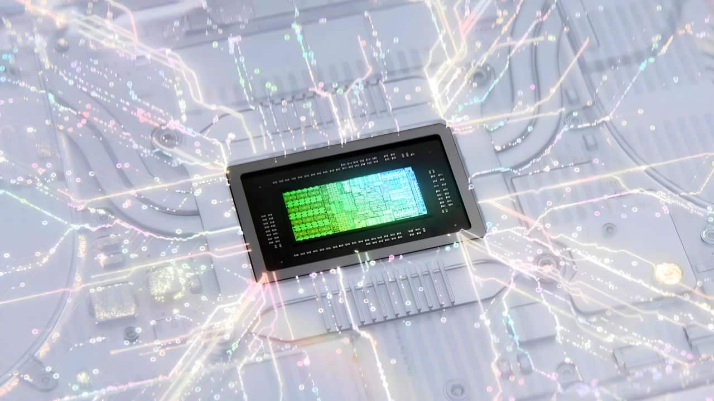
Evolución del silicio ARM de NVIDIA: del DGX Spark (GB10) al RTX Spark para Windows · Fuente: Profesional Review
NVIDIA suministra su SoC Tegra a Microsoft para los primeros Surface RT, el primer intento de Windows en ARM. La escasa compatibilidad de software hace que fracase en el mercado.
Apple lanza el M1, primer SoC propio con memoria unificada CPU+GPU. Demuestra que ARM puede superar a x86 en rendimiento por vatio, especialmente en cargas creativas y de IA.
Jensen Huang anuncia en CES 2025 un mini-supercomputador personal basado en el superchip GB10 Grace Blackwell. Se posiciona como herramienta de IA para desarrolladores, bajo Linux, con 1 petaFLOP. El precio anunciado: 3.000 dólares.
El dispositivo recibe su nombre definitivo, alineándose con la línea DGX de NVIDIA. Sube de precio a 3.999 dólares. Corre Ubuntu/Linux. Dirigido a científicos de datos e investigadores de IA. Primer competidor real del Mac Studio en el segmento IA personal.
Se pone a la venta el 15 de octubre de 2025. Socios OEM: Acer, ASUS, Dell, HP, Lenovo, MSI y Gigabyte lanzan sus propias versiones basadas en GB10. En febrero 2026, la escasez de DRAM eleva el precio a 4.699 dólares.
NVIDIA anuncia una mejora de software que multiplica por 2,5x el rendimiento del DGX Spark respecto al lanzamiento, demostrando el potencial del chip GB10 todavía sin explotar.
Jensen Huang presenta oficialmente el RTX Spark en Computex: el primer SoC ARM de NVIDIA pensado para portátiles y mini-PCs con Windows 11. Co-diseñado con MediaTek. Adopción inmediata de Microsoft, HP, Dell, ASUS, Lenovo y MSI.
Portátiles Surface Ultra, ASUS ProArt P14/P16, Dell XPS, HP, MSI y Lenovo Yoga Pro con RTX Spark comenzarán a estar disponibles para el consumidor y el sector profesional.
Uno de los puntos de mayor confusión en la cobertura mediática es la existencia de dos productos NVIDIA bajo el apellido "Spark". Su origen en el mismo chip GB10 los hace técnicamente parecidos, pero responden a mercados, sistemas operativos y casos de uso completamente distintos. Este apartado los diferencia con claridad.
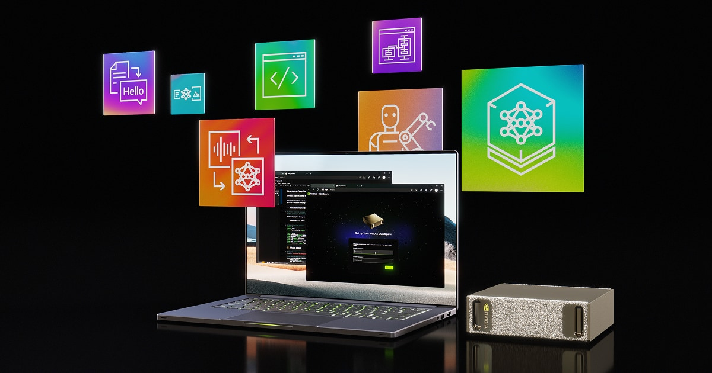
Estación de trabajo IA de escritorio · Linux
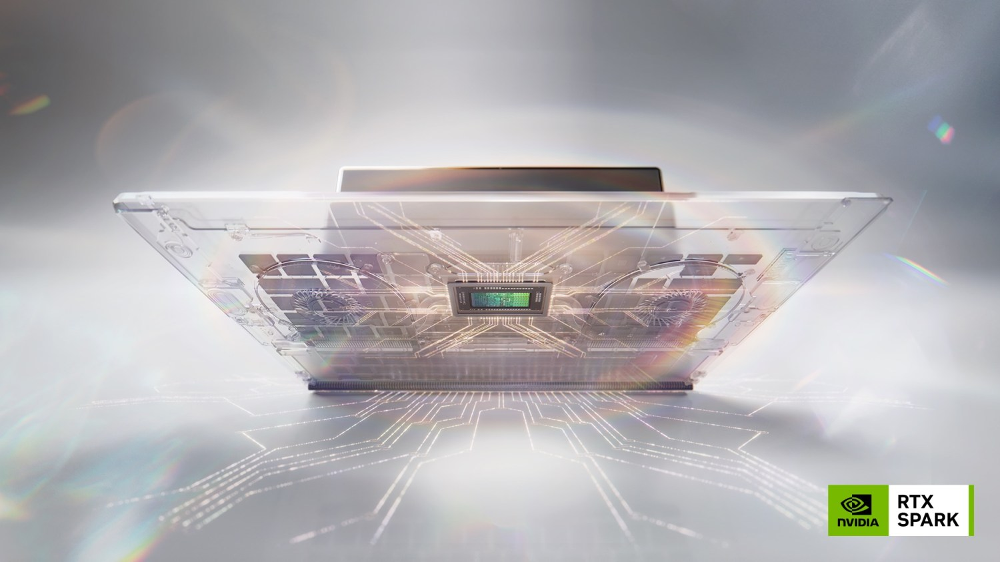
SoC para portátiles y mini-PCs · Windows 11
| NVIDIA DGX Spark El que ya existía — Antiguo |
NVIDIA RTX Spark Nuevo Computex 2026 |
|
|---|---|---|
| Anuncio | CES 2025 (enero) como «Project DIGITS» | Computex 2026 (31 mayo) |
| Chip | NVIDIA GB10 Grace Blackwell Superchip | NVIDIA RTX Spark SoC (basado en GB10, co-diseñado con MediaTek) |
| Arquitectura CPU | 20 núcleos ARM Grace (10 × Cortex-X925 + 10 × A725) | 20 núcleos ARM Grace (10 × Cortex-X925 modificado + 10 × A725) |
| GPU | Blackwell — 6.144 núcleos CUDA | Blackwell RTX — 6.144 núcleos CUDA + RT Cores + Tensor Gen.5 |
| Memoria | 128 GB LPDDR5X unificada · 273 GB/s | Hasta 128 GB LPDDR5X unificada · hasta 300 GB/s (configs desde 16 GB) |
| Forma física | Mini-PC de escritorio compacto (150×150×50 mm, 1,1 litros) |
SoC para portátiles y mini-PCs compactos (múltiples OEM) |
| Sistema operativo | Linux (Ubuntu 22.04 + NVIDIA AI Stack) | Windows 11 on ARM (+ ecosistema CUDA, DLSS, OptiX) |
| Objetivo de mercado | Desarrolladores de IA, científicos de datos, investigadores, empresas | Profesionales creativos, ingenieros, jugadores, consumidor avanzado |
| Sofware de IA | NVIDIA AI Enterprise, DeepSeek, Meta Llama locales, Jupyter, Docker | CUDA, TensorRT, DLSS 4, NPU, agentes de IA Windows, apps creativas |
| Precio de lanzamiento | 3.999 $ (oct. 2025) → subió a 4.699 $ (feb. 2026) | Pendiente (precio estimado de portátil: 2.000–4.000 €, según OEM) |
| Disponibilidad | Disponible desde oct. 2025 | Otoño 2026 |
| Conectividad | ConnectX-7 (200 GbE), USB-C, HDMI 2.1 | Según OEM (algunos con ConnectX-7, Thunderbolt 5, USB4) |
| Ecosistema software | Entorno cerrado de IA — no apto para ofimática general | Windows completo — compatible con todo el software empresarial x86 |
| ¿Reemplaza al anterior? | No. Son productos complementarios. El DGX Spark es una estación de trabajo IA para entornos Linux. El RTX Spark es un SoC para el mercado Windows masivo. | |
El DGX Spark es una caja de escritorio con Linux, orientada al desarrollo profesional de modelos de IA. El RTX Spark es el chip que va dentro de los portátiles con Windows que comprará el mercado masivo en otoño de 2026. Comparten ADN técnico (ambos derivan del GB10), pero son factores de forma, sistemas operativos y audiencias completamente distintos. Cuando la prensa habla de "NVIDIA entrando al mercado de portátiles Windows", se refiere siempre al RTX Spark, no al DGX Spark.
El RTX Spark no es solo un nuevo procesador: es una declaración de intenciones que reordena el tablero competitivo de toda la industria de las Tecnologías de la Información y la Comunicación.
Durante más de cuatro décadas, el mercado de PCs con Windows se ha definido por la arquitectura x86, con Intel y AMD como únicos proveedores de procesadores relevantes. La llegada de los chips Snapdragon X Elite de Qualcomm en 2024 fue el primer aviso serio, pero su rendimiento gráfico limitado frenó la adopción masiva en entornos profesionales. El RTX Spark cambia la ecuación: lleva al portátil una GPU Blackwell equivalente a una tarjeta discreta de gama alta, unida a una CPU ARM de última generación.
Para el sector TIC, esto implica una fragmentación del mercado de chips de PC que no se veía desde los años 90. Los fabricantes de software deberán compilar versiones nativas ARM64 para no perder rendimiento en los nuevos dispositivos. Microsoft ya está liderando este proceso: Windows 11 ha sido reescrito parcialmente para soportar la memoria unificada y los nuevos límites de acceso GPU del RTX Spark.
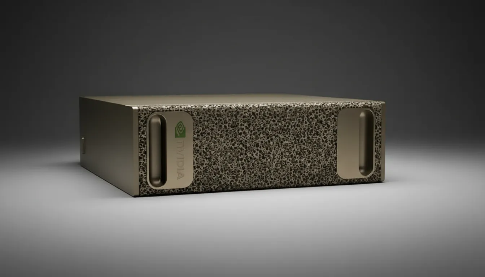
Con 1 petaFLOP FP4, un portátil RTX Spark puede ejecutar modelos de IA de 120.000 millones de parámetros localmente, eliminando la dependencia de APIs de pago y latencias de red. Impacto directo en el coste de infraestructura cloud.
Rendimiento de supercomputación en formato portátil. Lo que antes requería una tarjeta gráfica de escritorio de 1.000€ más un potente CPU ahora cabe en un laptop de 2 kg. Abre el HPC a usuarios que no podían costear workstations dedicadas.
Qualcomm Snapdragon X Elite se enfrenta a un rival con GPU notablemente superior y el peso del ecosistema CUDA. Apple verá cómo su ventaja de memoria unificada en Windows queda igualada. La competencia entre plataformas acelerará la innovación.
El ecosistema CUDA —con 15 años de librerías, frameworks y herramientas— llega por primera vez a arquitectura ARM en Windows. Desarrolladores de IA, gráficos y computación científica tendrán su entorno habitual en el nuevo hardware.
Un portátil RTX Spark ofrece rendimiento de workstation profesional. Para empresas, esto puede significar consolidar equipos: un solo dispositivo reemplaza al laptop + estación de trabajo de renderizado externa.
El nodo TSMC 3nm y la arquitectura ARM permiten el mismo rendimiento con consumos de entre 10 W y 80 W, frente a los 150-250 W de soluciones x86+GPU discreta equivalentes. Relevante para objetivos de sostenibilidad corporativa.
| Apple Silicon M4/M5 | Qualcomm Snapdragon X Elite | NVIDIA RTX Spark Nuevo | |
|---|---|---|---|
| Arquitectura | ARM (Apple custom) | ARM (Qualcomm Oryon) | ARM (NVIDIA Grace + MediaTek) |
| GPU | GPU Apple (Metal) — sin CUDA | Adreno — sin CUDA | Blackwell RTX — CUDA nativo |
| Ecosistema IA | Core ML / Metal Performance Shaders | QNN, DirectML | CUDA, TensorRT, DLSS, OptiX |
| Memoria unificada máx. | 128 GB (MacBook Pro M4 Max) | 64 GB | 128 GB |
| Rendimiento IA (FP4) | No compatible con FP4 cuantificado | ~45 TOPS (NPU) | 1.000.000 TOPS (1 petaFLOP) |
| Sistema operativo | macOS (ecosistema cerrado) | Windows 11 | Windows 11 |
| Compatibilidad software empresarial | Limitada (macOS vs Windows) | Alta (emulación x86) | Alta (emulación x86 + nativo ARM64) |
El RTX Spark es el «Apple M1 moment» de NVIDIA: la primera vez en más de una década que lanzan un chipset ARM para ordenadores personales, y lo hacen directamente con GPU de nivel RTX 5070 y 1 petaFLOP de IA.
— WhattsNew.com, análisis Computex 2026Para un estudio de arquitectura en Madrid, el RTX Spark representa una oportunidad concreta de transformar flujos de trabajo, reducir tiempos y democratizar herramientas de IA que hoy exigen hardware costoso o suscripciones cloud permanentes.
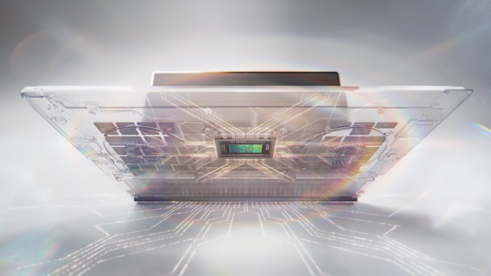
Windows + RTX Spark: GPU Blackwell para renderizado ray tracing, DLSS y cargas de IA locales vía Windows ML · Fuente: Microsoft LATAM
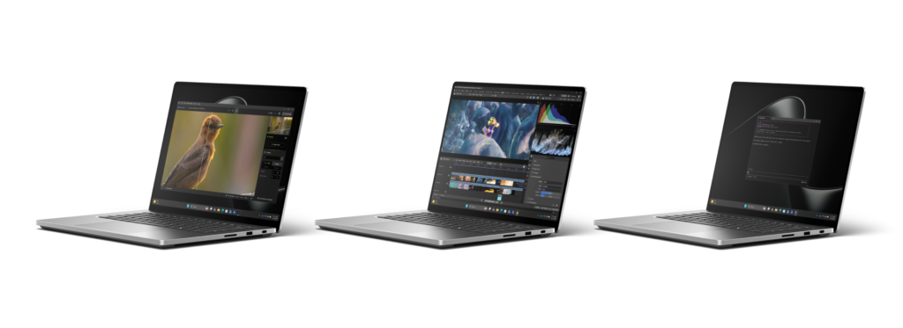
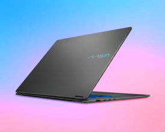
El equivalente de una RTX 5070 embebida en el portátil permite usar NVIDIA RTX con path tracing en tiempo real en Enscape, Lumion, D5 Render y V-Ray. El arquitecto puede revisar materiales, iluminación y sombras mientras modela, sin esperar tiempos de render de horas. Los renders finales se aceleran con DLSS 4 y NVIDIA OptiX.
Con 128 GB de memoria unificada y 1 petaFLOP de IA, el RTX Spark puede ejecutar modelos LLM localmente: asistentes de documentación técnica, generación de planos a partir de especificaciones, análisis de proyectos anteriores o extracción automática de mediciones desde modelos IFC. Sin enviar datos sensibles del cliente a la nube.
Herramientas como Stable Diffusion, Flux o modelos de generación 3D correrán en local con el RTX Spark. Esto permite generar referencias visuales de conceptos, variaciones de fachadas, propuestas de materiales o moodboards directamente desde el portátil del arquitecto, sin depender de servicios externos ni APIs de pago.
Los 6.144 núcleos CUDA aceleran simulaciones CFD (fluidodinámica), análisis de radiación solar, iluminación daylighting y cálculos de eficiencia energética mediante herramientas como Ansys Fluent, EnergyPlus acelerado por GPU o plugins de OpenFOAM. Estudios que antes requerían servidores externos.
Un portátil RTX Spark permite llevar una escena de realidad virtual fotorrealista directamente a la reunión con el cliente, sin depender de un PC de sobremesa fijo. La GPU Blackwell soporta VR a resoluciones altas con DLSS, manteniendo tiempos de respuesta fluidos para paseos virtuales interactivos.
El procesamiento local de IA elimina la necesidad de subir planos, maquetas y datos de clientes a servidores externos. En un contexto de GDPR y gestión de proyectos con información confidencial (concursos, proyectos privados), la IA local es una ventaja competitiva y una obligación regulatoria.
| Herramienta / Flujo | Situación actual | Con RTX Spark | Impacto esperado |
|---|---|---|---|
| Revit + Enscape (BIM + render) | Workstation escritorio RTX 4080, sin portabilidad | Portátil RTX Spark (equivalente RTX 5070) | Render en tiempo real en cualquier lugar |
| AutoCAD / ArchiCAD | Buen rendimiento en x86 actual | Depende de versión nativa ARM64 | Transición necesaria |
| Rhino + Grasshopper | CPU-bound; GPU no relevante | CPU Grace ligeramente mejor; sin cambio drástico | Mejora moderada |
| V-Ray / Corona Renderer | Horas de render en GPU discreta | GPU Blackwell + TensorRT para denoising; DLSS 4 | Reducción del 40-60% en tiempo de render |
| Modelos LLM locales (asistente IA) | Dependencia API OpenAI/Anthropic; privacidad limitada | Modelos de hasta 120B parámetros en local con 128 GB RAM unificada | IA local, sin coste recurrente, datos seguros |
| Stable Diffusion / IA generativa | Requiere workstation GPU dedicada | 6.144 CUDA cores; rendimiento profesional en portátil | Generación de imágenes conceptuales en segundos |
| Presentaciones VR (Oculus Link) | Necesita PC gaming externo + cable | VR nativo desde el portátil; portabilidad total | Presentaciones inmersivas en cliente sin hardware extra |
| Simulación energética (EnergyPlus) | Simulaciones lentas o en servidor cloud | GPU CUDA para aceleración; resultados en minutos | Integración en flujo de diseño en tiempo real |
Un portátil RTX Spark cambia el paradigma del arquitecto en campo: ya no necesita una workstation de 8.000€ en la oficina para tener una demo fotorrealista del proyecto. La lleva en el maletín.
— Análisis propio basado en especificaciones publicadasSoftware ya compilado para ARM64 (Visual Studio, .NET 8, algunos plugins de Revit), aplicaciones de renderizado GPU-accelerated que usen CUDA nativo, herramientas de IA que usen TensorRT/CUDA y toda la stack de NVIDIA (DLSS, OptiX, NVENC para video).
Aplicaciones heredadas x86 sin versión ARM64 funcionarán mediante emulación Prism, con un impacto en rendimiento del 15-25%. Los títulos con antitrampas pueden tener problemas. Conviene auditar el catálogo de software del estudio antes de migrar. Los primeros equipos llegarán en otoño 2026.
Desde el anuncio en Computex, numerosos fabricantes han confirmado dispositivos. Esta es la panorámica de equipos disponibles o inminentes.
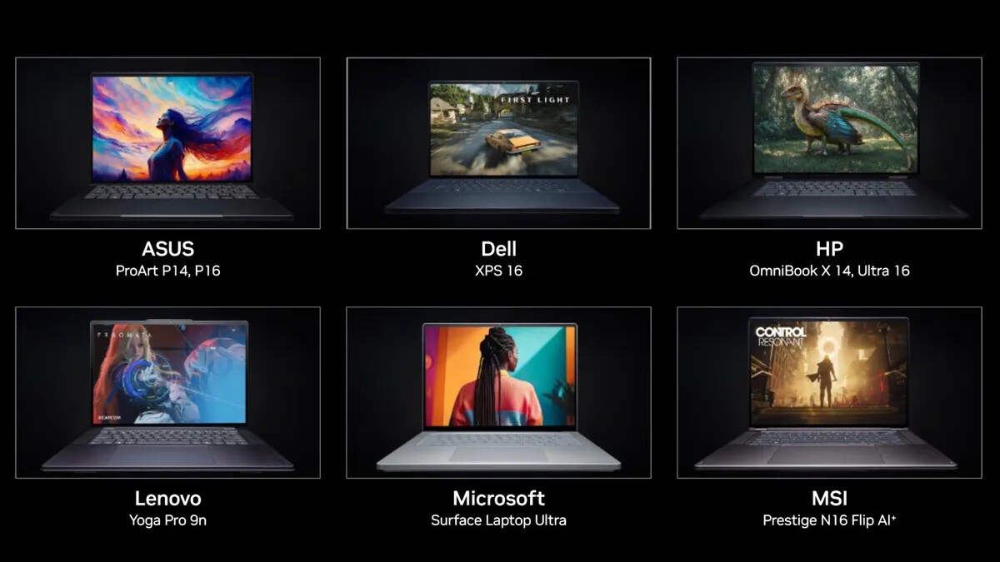
Ocho portátiles confirmados con RTX Spark: Surface, ASUS ProArt, Dell XPS, HP, Lenovo y MSI · Fuente: Xataka
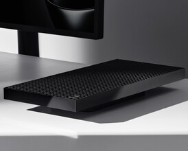
El primero confirmado oficialmente. Combina RTX Spark con 128 GB de RAM y diseño premium. Será la referencia del segmento enterprise. Precio pendiente.
Reservar en España ↗Presentados en Computex. Orientados a creativos y profesionales de diseño. El ProArt P16 con RTX Spark combina una pantalla OLED 4K con la GPU Blackwell.
Reservar en España ↗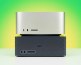
Dell prepara versiones del XPS premium con el SoC. El mini-PC de Dell con RTX Spark ha sido comparado visualmente con el Mac Studio por su diseño compacto y elegante.
Reservar en España ↗HP ha mostrado un prototipo de mini-PC con ConnectX-7, hasta 128 GB de RAM y capacidad de edición de vídeo 12K. Aún sin nombre oficial ni precio.
Reservar en España ↗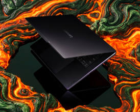
Lenovo ha confirmado dispositivos RTX Spark tanto en la línea Yoga (consumidor premium) como en ThinkPad (enterprise). Disponibilidad para otoño 2026.
Reservar en España ↗MSI anuncia portátiles de la línea Titan y Creator con RTX Spark, enfocados en gaming de alto rendimiento y creación de contenido. Aprovechan al máximo los 80 W de TDP.
Reservar en España ↗El lanzamiento del RTX Spark en Computex 2026 no es un lanzamiento más de hardware. Es el inicio de una transición profunda en cómo se estructura la computación profesional bajo Windows.
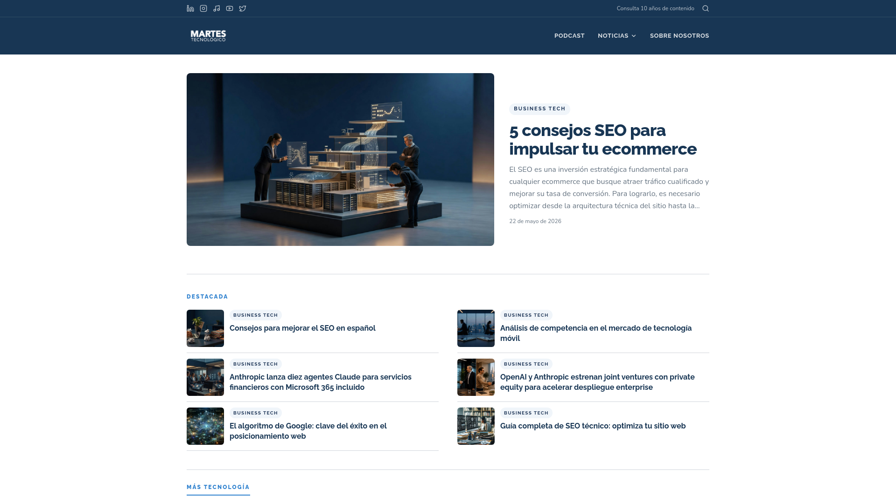
El RTX Spark consolida oficina, campo y procesamiento intensivo en un único dispositivo · Fuente: Martes Tecnológico · Hipertextual
El RTX Spark consolida la tendencia hacia chips altamente integrados que eliminen la separación tradicional CPU/GPU/NPU. El ecosistema CUDA en ARM supone la mayor disrupción en el mercado de PCs profesionales desde la introducción de los procesadores multinúcleo en la primera década del siglo XXI.
La fragmentación entre x86 y ARM acelerará la inversión de los ISVs en versiones nativas ARM64 de sus productos, lo que beneficiará a todo el ecosistema móvil/ARM a largo plazo. Intel y AMD deberán responder con propuestas de integración similares.
La llegada del RTX Spark representa una oportunidad de modernizar el parque de hardware del estudio con un coste de propiedad reducido, mayor rendimiento y la posibilidad de integrar IA local en los flujos de trabajo BIM, renderizado y presentación al cliente.
Se recomienda monitorizar los lanzamientos de otoño 2026, especialmente el Surface Laptop Ultra y el ASUS ProArt P16, para evaluar su adopción como equipos de nueva generación en el estudio.